Main Window Layout
The Library Manager for Venus 6 graphical user interface is built around a card-based library browser with navigation tabs, a sidebar for groups and VENUS tool shortcuts, and contextual detail modals.
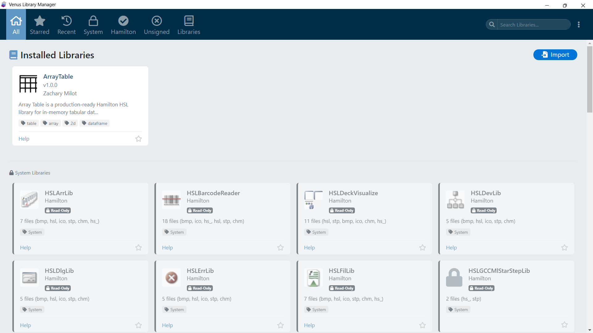
Navigation Tabs
The top of the main window provides tabs for different views of your library collection:
| Tab | Description |
|---|---|
| All | Displays every installed (non-deleted) library as a card |
| Recent | Shows recently imported libraries, limited by the configurable maximum (default: 20) |
| System | Shows Hamilton system libraries discovered from the VENUS installation. This is a read-only auto-detected group. |
| Hamilton | Shows libraries authored by Hamilton. This is a protected default group with a solid checkmark icon. See Library Grouping for details on its protections. |
| Starred | Shows only libraries you have starred (favorited). Click the star icon on any library card to toggle. Starred library IDs are saved in settings and persist across sessions. |
| Unsigned | Shows unsigned libraries discovered by scanning. Only visible when the feature is enabled and libraries have been found. See Unsigned Libraries for details. |
| Import | Provides the import workflow for .hxlibpkg and .hxlibarch files |
| Custom Groups | Filtered views showing only libraries assigned to a specific group |
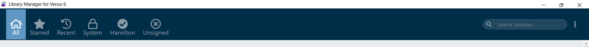
Library Cards
Each installed library is displayed as a visual card showing:
- Library Icon/Image - The embedded library image, or a default icon if none was provided
- Library Name and Version
- Author and Description (truncated)
- Tags - Searchable keyword labels
- Status Badges:
- COM badge - Indicates the library requires COM DLL registration
- COM warning - COM registration failed or was incomplete
- Deleted badge - Library has been soft-deleted
- Integrity Indicator - Shows whether tracked files have been modified, are missing, or pass verification
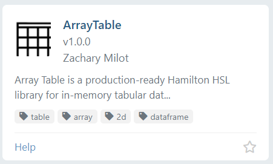
Search Improvements
The global library search now supports richer discovery across both user and system libraries:
- Cross-library search: Matches library name, author, description, tags, and public function names.
- Function-aware search: Public function names from
.hslfiles are indexed and matched, including system libraries. - Tag-only mode: Prefix with
#to search only by tags (example:#pipetting). - System tag behavior: System libraries include virtual system tags, so queries like
#systemreturn system libraries. - One-click tag search: Clicking a tag badge on a card automatically populates the search box in
#tagmode. - Fast keyboard controls:
Ctrl+Ffocuses search, andEscclears search when focused.
Search Mode Behavior
When a query is active, the UI enters search mode, temporarily clears the current tab highlight, and shows a consolidated result list. Clearing the query restores the previously active tab.
Card Styling States
Cards use visual styling to indicate health and quality:
| Style | Meaning |
|---|---|
| Normal card | Library is installed and all tracked files pass integrity checks |
| Integrity error style | One or more tracked files are missing or have been modified |
| COM warning style | COM DLL registration is incomplete or failed |
| Deleted style | Library has been soft-deleted (files removed, history preserved) |
Library Detail Modal
Clicking a library card opens a detailed modal showing comprehensive information about the library:
- Full metadata: name, version, author, organization, VENUS compatibility, created and installed dates
- Full description and tags
- Library image preview
- Complete lists of installed library files and demo method files
- Install paths for library and demo directories
- COM registration details with success/warning state
- File integrity verification results: missing files, modified files, legacy warnings, and pass status
- Public function signatures parsed from
.hslfiles
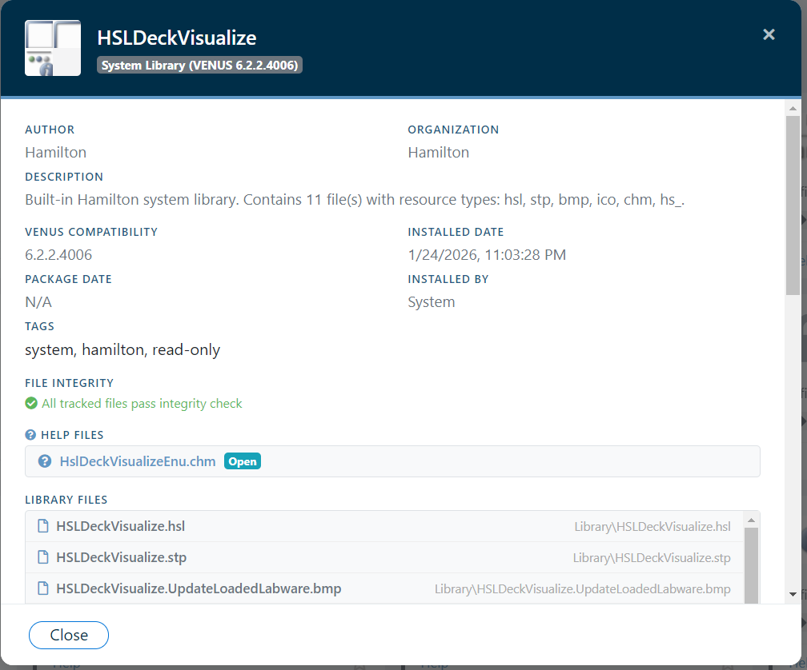
Actions Available in Detail Modal
| Action | Description |
|---|---|
| Export Library | Opens the Export Choice Modal where you can export the library as a single .hxlibpkg package, or export it together with all recursively-resolved dependencies as a .hxlibarch archive |
| Delete | Remove the library from disk and mark as deleted in the database |
Import Workflow
The Import tab provides two workflows:
Single Package Import (.hxlibpkg)
- Browse and select a
.hxlibpkgfile - The package's HMAC-SHA256 signature is automatically verified
- Review the pre-install preview modal showing metadata, file lists, install paths, signature verification status, and COM DLL notices
- If the signature verification fails, a warning dialog prompts you to confirm or cancel the import
- If the library is already installed, an overwrite/update warning is displayed
- Confirm to extract and install
- A post-install success modal summarizes the outcome
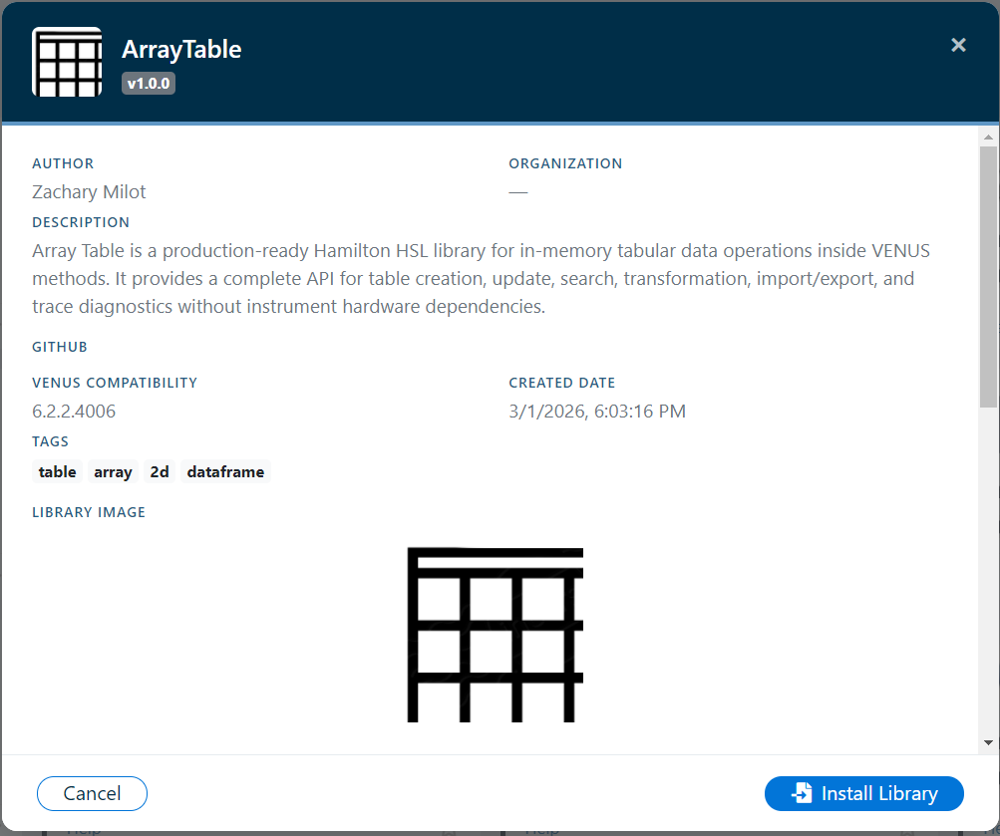
Archive Import (.hxlibarch)
- Select a
.hxlibarchfile - Review all contained packages in the confirmation dialog
- Each package's signature is verified before installation - packages that fail verification are automatically rejected and skipped
- Each passing package is extracted and installed sequentially
- An aggregate summary reports success/failure for each library
Library Packager
The built-in Library Packager creates .hxlibpkg files from raw source files. It provides fields for all metadata (author, version, description, tags, etc.) and supports adding individual files or folders as payload.
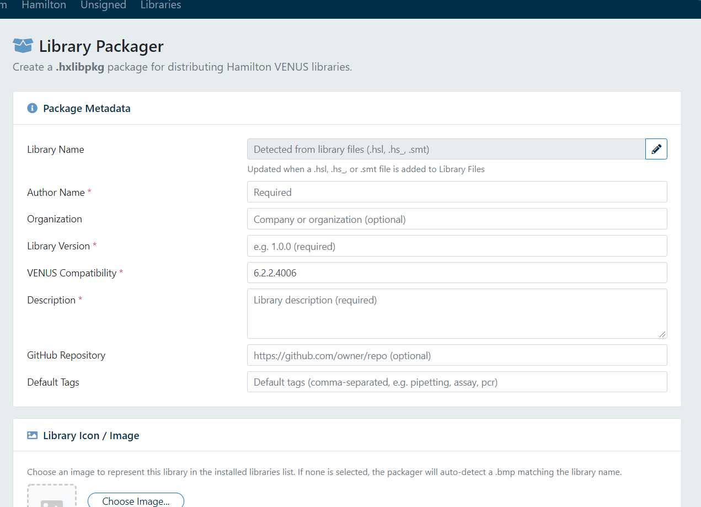
See Creating Packages for a detailed walkthrough.
Settings
The settings area allows you to:
- Manage custom library groups (create, rename, delete, reorder)
- Assign and move libraries between groups via drag-and-drop
- Configure the recent imports list size
- Control auto-group assignment behavior
- Enable unsigned library scanning with a Scan Now button (shows a spinning loading indicator during the scan and a green checkmark on completion), and optionally enable Scan for new unsigned libraries each launch to auto-scan at startup. See Unsigned Libraries for details.
- Require operator comments and/or operator signature for destructive or potentially destructive actions (delete, rollback, overwrite/upgrade, and archive overwrite decisions)
- Set user data directory path
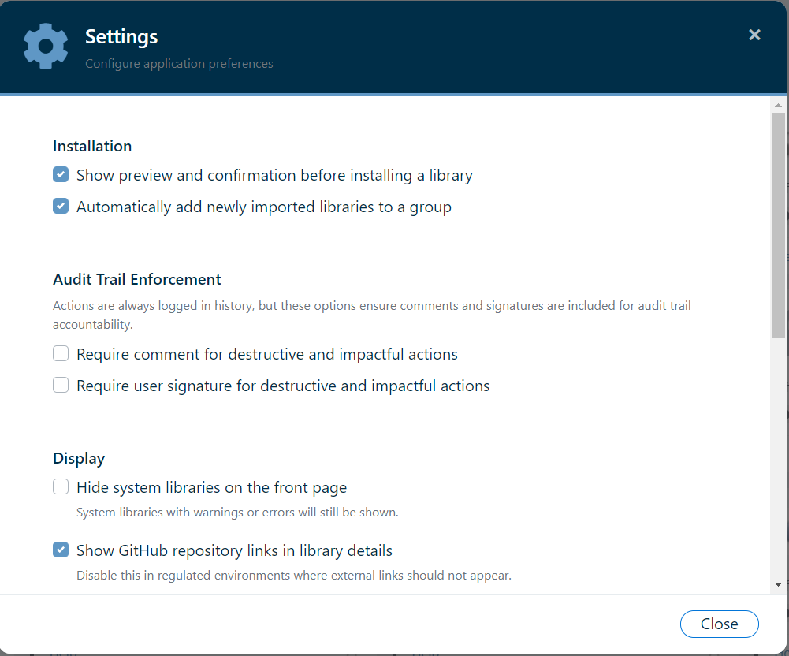
The settings menu is also accessible from the overflow menu in the top-right navigation bar:
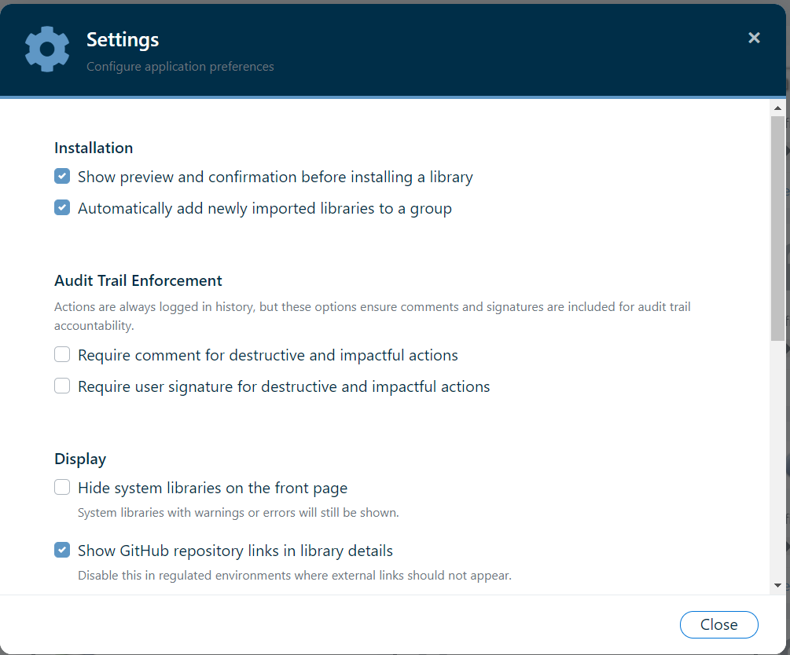
Tag Editing Rules
Tags are user-editable and are normalized/sanitized before saving:
- Converted to lowercase and spaces are removed
- Allowed characters are
a-z,0-9, and- - Underscores are blocked except the special-case tag
ml_star - Minimum length is 2, maximum length is 24, and maximum tag count per item is 12
- Numeric-only tags are rejected
- Tags containing reserved words (for example:
system,hamilton,starred,signed,unsigned,registered,unregistered) are blocked
See Unsigned Libraries and Package Spec JSON Schema for complete tag policy details.
VENUS Tool Shortcuts
The sidebar provides quick-launch shortcuts to Hamilton VENUS utilities. See VENUS Integration for the full list.
Help Menu
Access the compiled help file (Library Manager for Venus 6.chm) from the overflow menu. Video tutorial infrastructure is also available for in-app help playback.
Verify & Repair Tool
The overflow menu includes a Verify & Repair tool that provides a comprehensive integrity scan and one-click repair for all libraries - both Hamilton system libraries and user-installed libraries. See Integrity Verification for the full technical documentation.
How It Works
- Scan: When opened, the tool scans every library in the system:
- System libraries are verified using Hamilton's metadata footer fields (
$$valid$$,$$checksum$$) compared against a stored baseline. - User-installed libraries are verified by recomputing SHA-256 hashes for all tracked files and comparing them against the stored baselines.
- System libraries are verified using Hamilton's metadata footer fields (
- Report: Results are displayed in two sections - System Libraries (with a [System] badge) followed by Installed Libraries. Each library shows one of three statuses: OK (green), WARNING (yellow), or FAILED (red), along with specific error details per file.
- Repair: For any library with issues, if a cached or backup
.hxlibpkgexists in the package store, a Repair button re-extracts the original files. The cached package's HMAC-SHA256 signature is verified before repair to prevent restoring from a corrupt source. - Batch Repair: A Repair Selected button repairs all failed libraries (system and user) in one operation. A confirmation dialog lists the libraries before proceeding, and a summary is shown afterward.
First-Run System Library Backup
On the very first launch, Library Manager for Venus 6 automatically creates a signed .hxlibpkg backup for every Hamilton system library and stores it in the package store. This ensures that system libraries can always be repaired even though they were not originally imported through the application. See Integrity Verification - First-Run System Library Backup for details.
Repair from the Detail Modal
You can also repair a single library directly from its detail modal. Open any library card and scroll to the File Integrity section. If errors are detected and a backup/cached package exists, a Repair from Backup button appears below the error list. This works for both system and user-installed libraries.
Note: Libraries imported with --no-cache have no cached package in the store and cannot be repaired through this tool. Re-import the original package file instead. System libraries without a first-run backup (e.g., if the first run failed) can be re-backed-up by removing the sysLibBackupComplete setting and restarting.
Overflow Menu
The overflow menu is accessed from the vertical ellipsis () button in the top-right corner of the navigation bar. It provides access to tools and settings that are not assigned to individual tabs.
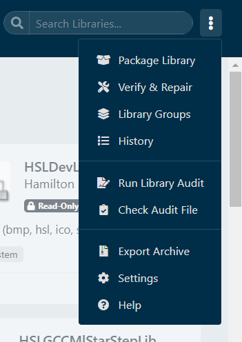
| Menu Item | Description |
|---|---|
| Package Library | Opens the Library Packager in the Export tab, pre-filling the VENUS compatibility version |
| Verify & Repair | Opens the integrity verification modal for all libraries |
| Library Groups | Opens the groups management modal to create, rename, delete, and reorder groups |
| History | Opens the Event History modal showing all recorded activity (see below) |
| Run Library Audit | Generates a signed audit log .txt file. See Library Audit Log |
| Check Audit File | Opens a file picker to select and verify an existing audit log file's integrity signature |
| Export Archive | Opens the multi-library archive export modal. See Exporting Libraries |
| Settings | Opens the Settings modal |
| Help | Opens this compiled help file (Library Manager for Venus 6.chm) |
Starred Libraries
Any library can be starred (favorited) by clicking the star icon () in the bottom-right corner of its library card. Starred libraries appear with a solid star icon () and are collected in the Starred navigation tab.
- Click the star on a card to toggle starred status on or off
- Starred library IDs are saved to
settings.jsonand persist across application restarts - If you are viewing the Starred tab and unstar a library, the card is immediately removed from view
- The Starred tab shows an empty-state message when no libraries are starred
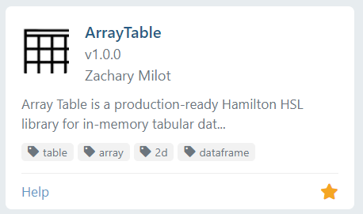
Event History
The Event History modal (accessed from Overflow Menu → History) provides a complete, searchable log of all recorded library management activity. This is your primary tool for auditing who did what and when.
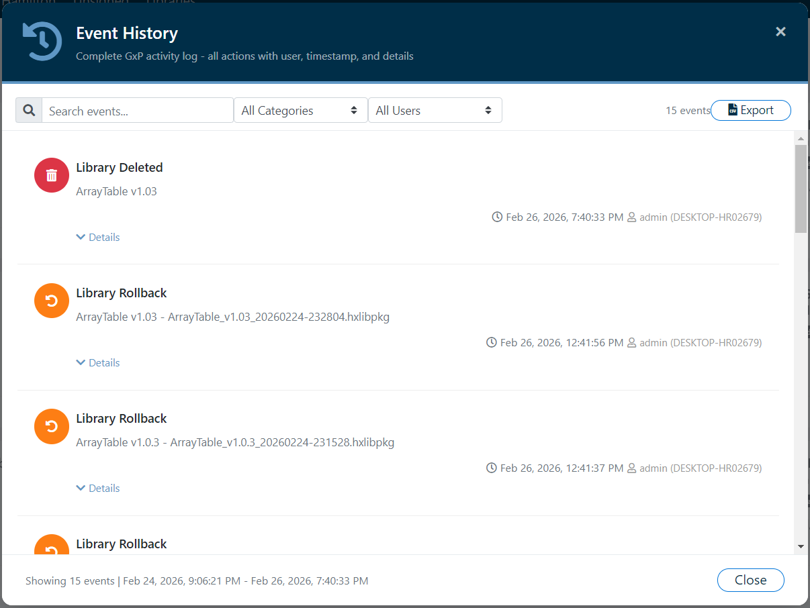
Event Types
| Event | Category | Icon Color | Description |
|---|---|---|---|
| Package Created | Create | Green | A new .hxlibpkg was built using the Library Packager |
| Library Imported | Import | Blue | A single library package was imported |
| Archive Imported | Import | Teal | A multi-library archive was imported |
| Library Deleted | Delete | Red | A library was deleted |
| Library Rollback | Rollback | Orange | A library was rolled back to a previous version |
| System Library Integrity Check | System | Purple | A system library integrity verification was performed |
Filtering & Search
The Event History toolbar provides three filtering mechanisms that work simultaneously:
- Text Search: Free-text search across all visible event content (library names, versions, filenames, usernames)
- Category Filter: Dropdown to filter by event category (All, Import, Export, Create, Delete, Settings, Group, Repair, Rollback, Audit, System)
- User Filter: Dropdown dynamically populated with all usernames found in the audit trail
The total visible event count is shown in the toolbar and updates as filters are applied.
Event Details
Each event row displays:
- A color-coded icon badge matching the event type
- The event label (e.g., "Library Imported")
- A summary line showing the library name, version, and source file
- Timestamp, Windows username, and hostname
- An expandable Details toggle revealing a full key-value table of all captured metadata
CSV Export
Click the Export button to save the currently visible (filtered) events as a CSV file. The export includes columns for Timestamp, Event, Category, User, Hostname, and Details.
Run Log Cleanup
Library Manager for Venus 6 can automatically clean up old VENUS run log files at startup. This feature is controlled by settings in the Settings modal:
| Setting | Description |
|---|---|
| Enable Run Log Cleanup | Master toggle to enable/disable automatic cleanup at startup |
| Days Threshold | Files older than this many days are processed |
| Cleanup Action | Delete (permanently remove) or Archive (move to archive folder) |
| Archive Folder | Destination directory for archived files (defaults to system temp directory) |
When cleanup runs, a progress bar appears in the navigation bar showing "Cleaning up run logs" with a percentage. After completion, the message changes to "Run log cleanup completed!" and fades out after a few seconds.
Window State
The application saves and restores its maximized state across sessions. When you close the window, the current state is dual-written to localStorage (primary) and the windowMaximized key in settings.json (secondary).
- Default on install: The window opens maximized (
windowMaximizeddefaults totrue). - Restore / un-maximize: If you restore the window to its normal size before closing, the next launch will open at the default dimensions of 1280 × 800 pixels (minimum 800 × 700).
- Maximize again: If you maximize the window before closing, the next launch will open maximized.
To avoid a visible “resize flash,” the inline startup script reads localStorage (falling back to settings.json on first run) and, when maximized, pre-sizes the hidden window to match the available screen dimensions using win.moveTo/win.resizeTo before calling win.show(). Because the window is already screen-sized when it becomes visible, the subsequent win.maximize() call is invisible to the user.
Window position (x, y coordinates) is not persisted.